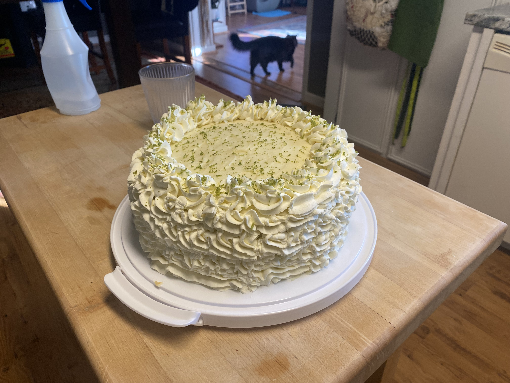

Keylime Cake

The First Ever Keylime Cake, Made For Janet's Birthday!
Ingrediants!
Cake!
- 3 cups all purpose flour
- 2 1/4 cup sugar
- 1 1/2 of 1/4 tsp baking powder
- 1 1/2 tsp baking soda
- pinches of salt to taste
- 4 1/2 eggs
- 1 cup oil
- 1 cup keylime juice
- 1 1/2 of 1/4 cup sour cream
- keylime zest for garnishing
Frosting!
- 1 cup butter
- 16 oz. cream cheese
- powdered sugar to taste
- free pour vanilla to taste
- 1/4 cup keylime juice
- keylime zest for visual and taste
Whipped Cream!
- 1 cup or more of cream
- sugar to taste
- white chocliate pudding and pie filling for flavor and firmness
Steps!
Cake!
- Preheat oven to 350 degrees. Grease and flour 3 8/9-inch cake pans.
- Mix together flour, sugar, powder, soda and salt into mixer.
- Add eggs, oil, and lime juice. Beat until smooth.
- Add sourcream and beat until smooth.
- Pour in prepared pans and bake for 20-25 minutes until instrument inserted comes out clean. Coli.
Frosting!
- Cream room temperatre butter and cream cheese.
- Add in sugar.
- Add in vanilla.
- Add in keylime juice.
Whipped Cream!
- Whip ingredients into cream.
Return To Home